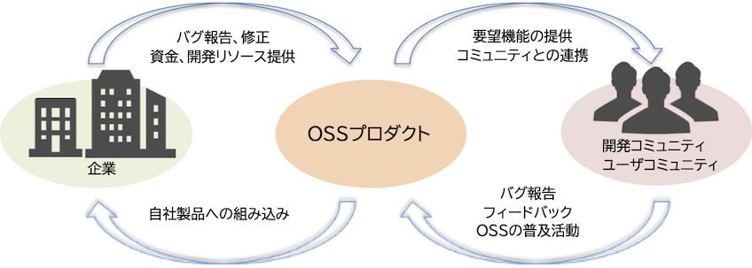

- 問題ID : 15835 オープンソースのコミュニティとエコシステム
- 履歴
正解
誰でも参加できる
解説
オープンソースコミュニティとは、オープンソースソフトウェア（OSS）の開発や改善に共通の関心を持ち、共同開発や情報交換を行う人々の集まりのことです。OSSの種類によって様々なコミュニティが存在し、メンバーは開発者、利用ユーザ、企業などで構成されています。
オープンソースのコミュニティには基本的に誰でも参加できます。
したがって正解は
・誰でも参加できる
です。
ほとんどのコミュニティはWebサイトが運営されており、Webサイトからメンバー登録を行えます。
その他の選択肢は全て誤りです。
参考
【オープンソースコミュニティ】
オープンソースコミュニティとは、オープンソースソフトウェア（OSS）の開発や改善に共通の関心を持ち、共同開発や情報交換を行う人々の集まりのことです。OSSの種類によって様々なコミュニティが存在し、メンバーは開発者、利用ユーザ、企業などで構成されています。
●コミュニティへの参加
オープンソースのコミュニティには基本的に誰でも参加できます。ほとんどのコミュニティはWebサイトが運営されており、Webサイトからメンバー登録を行えます。
情報収集やバグ報告など意見を交換する手段としては、メーリングリストや掲示板・フォーラム、チャットなどが用意されています。また、イベントやトレーニングが各地で開催されることもあり、他のコミュニティメンバーと直接会って交流することも可能です。
●コミュニティでのオープンソースソフトウェアの開発
オー
プンソースコミュニティでは多数のメンバーがソースコードを変更、共有して開発を行います。そのため、いつ、誰が、何を変更したかという情報を管理する
バージョン管理が必要になります。バージョン管理システムでは、ソースコードや変更履歴をリポジトリと呼ばれるデータベースで管理し、以前のバージョンを
参照したり復元したりできます。
主なバージョン管理システムには、リポジトリをサーバで管理するCVSやSubversion、リポジトリをロー
カルに分散保有できるGit（ギット）やMercurial（マーキュリアル）などがあります。現在は、Gitを使用したWebサービスである
GitHubやGitLabでバージョン管理やレビューを行うのが主流となっています。提案した変更が承認されるごとにコミュニティへの貢献（コントリ
ビューション）度が上がり、コミュニティ内での権限が広がる場合もあります。
●オープンソースコミュニティの例
オープンソースコミュニティにはLinux Foundation、GNUプロジェクト（グヌープロジェクト）などがあります。
・Linux Foundation
Linuxだけではなく様々なオープンソースの技術の発展や活用を目的とする非営利の共同事業体です。各種プロジェクトへの資金援助、イベントの開催、サービスの提供や教育などを行っています。Linuxカーネルの開発者リーナス・トーバルズが参加しています。
・GNUプロジェクト（グヌープロジェクト）
フリー（自由）なオペレーティングシステムを開発する目的で、当時MITにいたリチャード・ストールマン（フリーソフトウェア財団の創設者）によって立ち上げられました。
【オープンソースエコシステム】
エコシステム（ecosystem）は本来は英語で生態系の意味ですが、IT分野においては、企業間で連携し合って商品開発などを行い、業界全体や消費者、社会を巻き込みながら共存共栄していく仕組みとして使われています。食物連鎖や循環の意味から造られた新語です。
オー
プンソースにおいては、OSSを利用するユーザがバグ報告や改善の提案をフィードバックしたり、OSSを自社製品に組み込んだ企業がバグ修正やソースコー
ドの公開（ライセンスに従って）を行うことによってOSSは利用者が求める機能を実装し広く使用されるようになる、といった循環がエコシステムになってい
ます。エコシステムに参加する人々がそれぞれの立場で連携することで、OSSの発展を促進できます。
